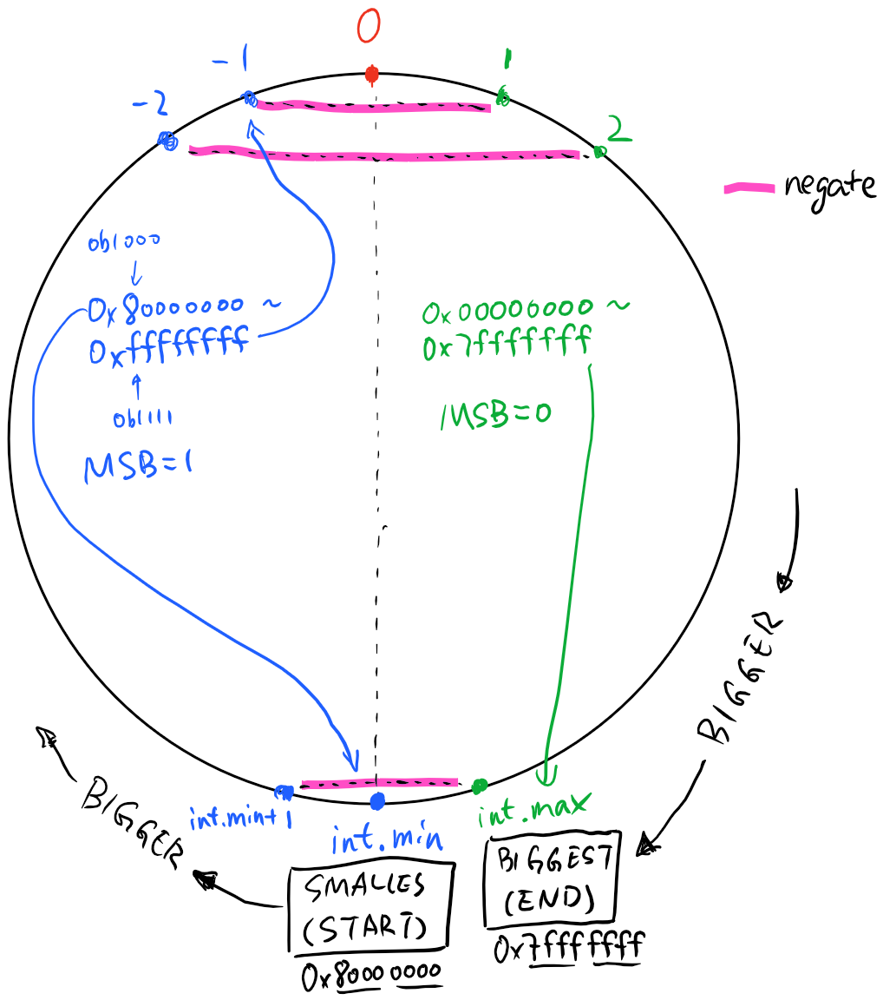

Two's complement notes
Contents
In the following discussion, I assume the cardinality of the number set is 2^32, or, 32 bit integer. But it can be generalized to any size.
A visualization of the integers on the number domain.

There's always one more negative numbers than the positive numbers. That's because, total available numbers is even (2^32). 0 take a spot, leaving all positive and negative numbers to split the rest 2^32 - 1 spots, which is an odd number.
This further leads to the fact that
abs(int.MinValue) = abs(int.MaxValue) + 1
So on any integer domain, negation should not cause overflow except for
int.MinValue. Interestingly,
-int.MinValue == int.MinValue
For two's complement representation, $b_{31} b_{30} ... b_0$, the most significant $b_{31}$ represents the sign of the integer. That's the reason why negative numbers are more than positive numbers, as 0 takes a spot in the $0 b_{30} ... b_0$ space.
Negating a number $x$ can be done by computing $0 - x$, or more commonly, by inverting the bits and add 1.
-x = ~x + 1
In terms of math operations, note that two's complement representation works
intuitively with addition and substraction: -1 == 0 - 1 == 0xffffffff.
Also note that for signed integers, the fill value of right shift bit operation depends on the sign of the number. For negative numbers, right shifting will shift in 1 instead of 0 for the most significant bit, to maintain the sign.
Note about integer shifting and two's complement - integer division are roundings towards 0. So $\frac{5}{-1} = \frac{-5}{2} = -2$, $\frac{-1}{2} = \frac{1}{-2} = 0$. This is different than right shifting, rounding of negative numbers resulting from right shifts are towards minus infinity $-\infty$. Divide by two and right shifts are only equivelent when the result to be rounded is positive.
Taking absolute values of negative numbers in two's complement can be achieve by negating the number and cast to unsigned counterpart of the integer type:
abs(x) = (uint)(-x), when x < 0, x is integer
The reason of the casting is because integer range can't represent numbers in
the domain of the absolute function - abs(int.MinValue). Casting to unsigned
integer works even for int.MinValue.